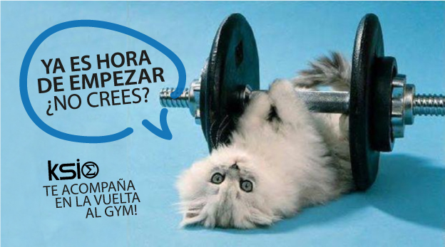
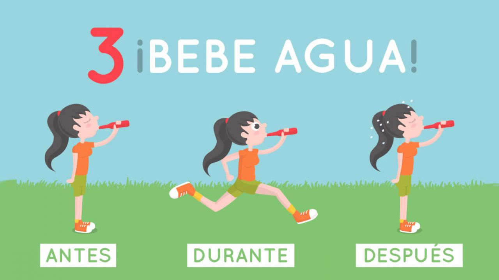
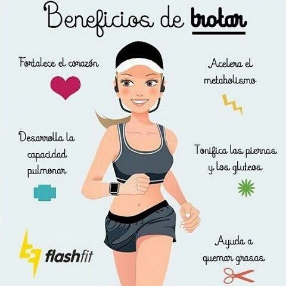
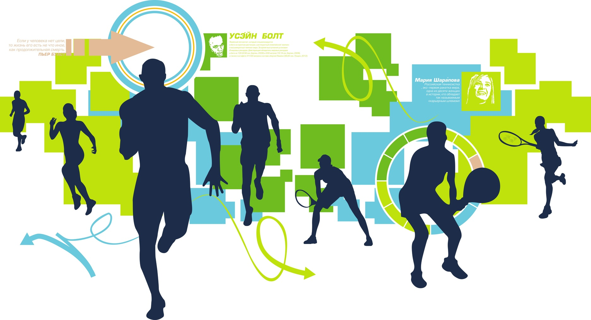
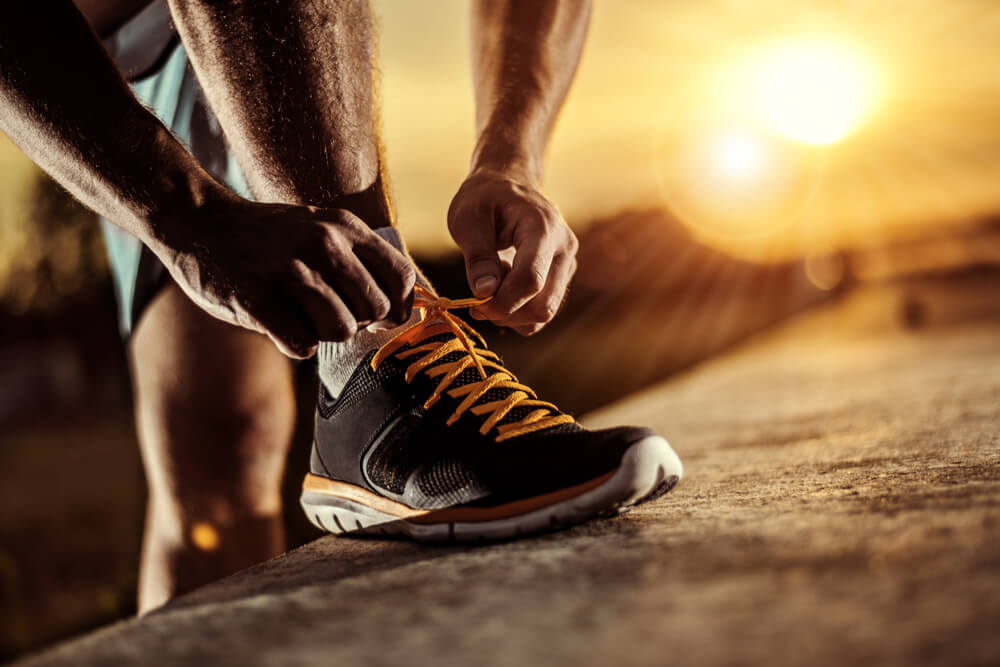

En este sitio encontraras todo lo relacionado al mundo de deportes,
su historia, los tipos de deportes y muchos tips que te
ayudaran en tu diario vivir con solo practicando, encuentra
el deporte que mas se adapta a tu cuerpo y a la comunidad donde vives!
By Ruth Sarai Rivas Decorado SMIS004714 |
|
| Inicio |
Tips |
Beneficios |
Contacto |
SABIAS QUE! Hacer deporte siempre es sano y bueno para nuestra salud,
pero el mejor momento para practicar deporte es la tarde noche, es cuando nuestro cuerpo
tiene asimilados todos los nutrientes que ha consumido durante todo el dia, llegando a una concentración mayor de energía.
El cuerpo asimila mejor los alimentos pasadas dos horas después de practicar cualquier tipo de actividad física.
|
|
|  |
 |
 |
Correr rápido y a alta intensidad entre cinco y diez minutos al día puede proporcionar los mismos resultados saludables
como hacerlo durante horas. De hecho, las personas que corren menos de una hora a la semana -siempre y cuando lo hagan varias veces
a la semana y con un ritmo alto- tienen los mismos beneficios en términos cardiovasculares que aquellos que lo hacen durante más de tres horas.
Después de entrenar se aconseja beber leche para recuperar el glucógeno, fuente principal que tienen los músculos a la hora de entrenar, sino se podría llegar a sufrir un desgaste muscular. |
|
|
|
|  |
|
|  |
|
  |
|
 Regresar
Regresar